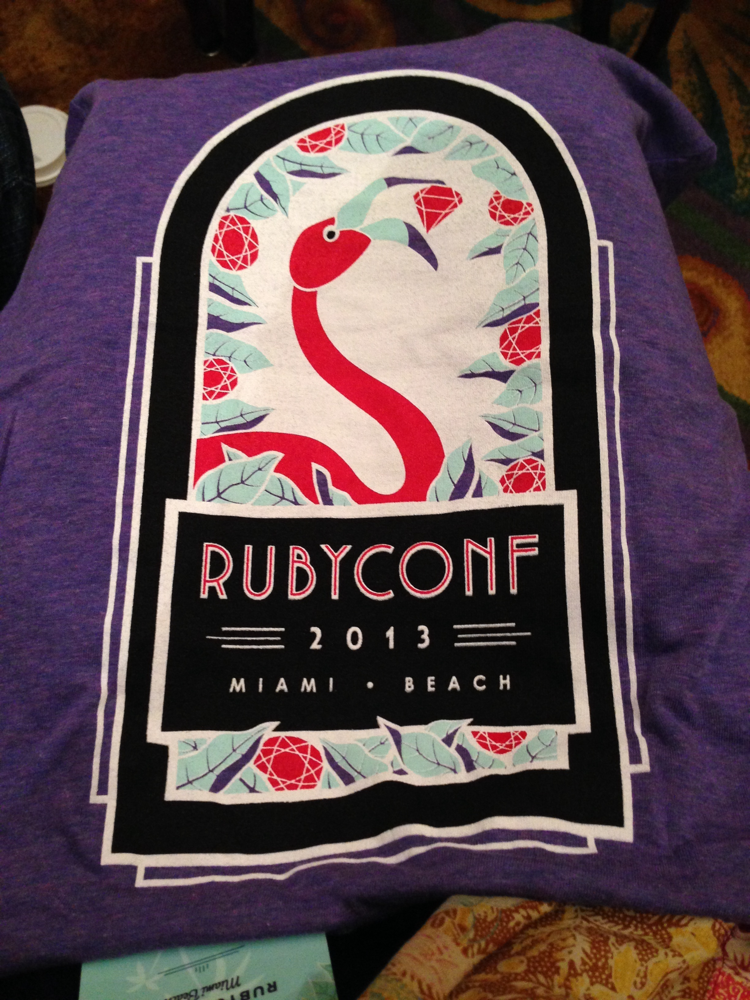

Welcome to Miami
|

|
Speaker: Kinsey Ann DurhamInspiring a New Generation of DevelopersIn my wildest dreams, I never thought that I would become a software developer. I thought that I wasn't smart enough, that I needed a computer science degree and to have been writing code since I was young. But, the traditional path to becoming a developer is changing. This talk will focus on alternative and untraditional paths to becoming a developer such as programs like Railsbridge, mentorship, and apprentice programs. These alternative paths ultimately foster a more diverse and inclusive community, which drives economic growth and produces more innovative solutions. The objectives of the talk are:
|